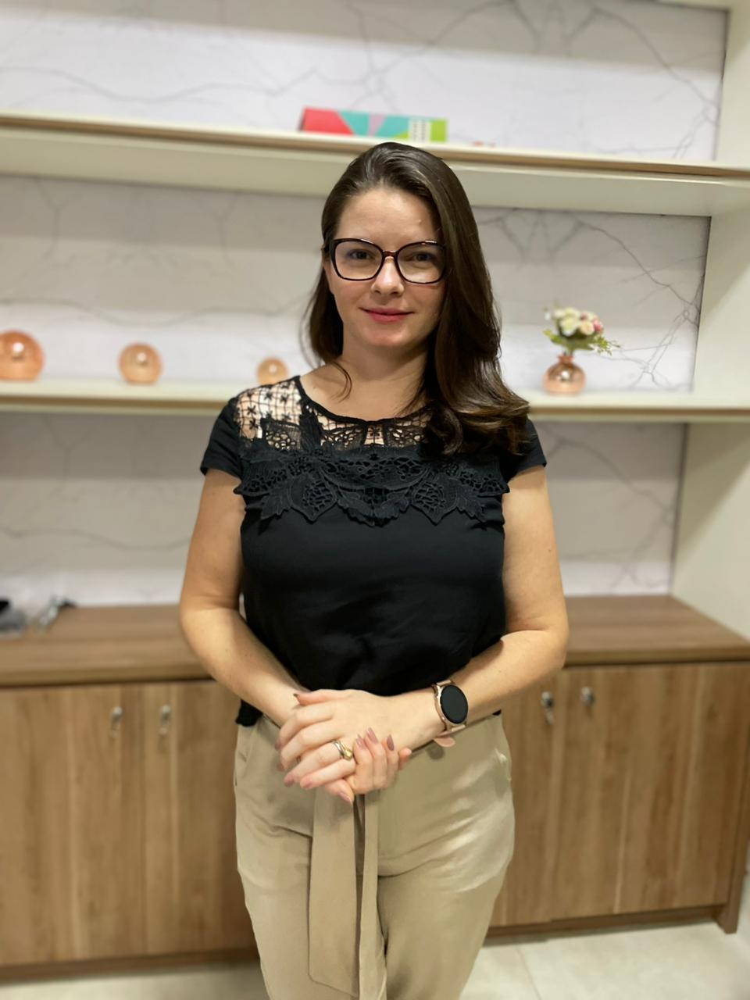
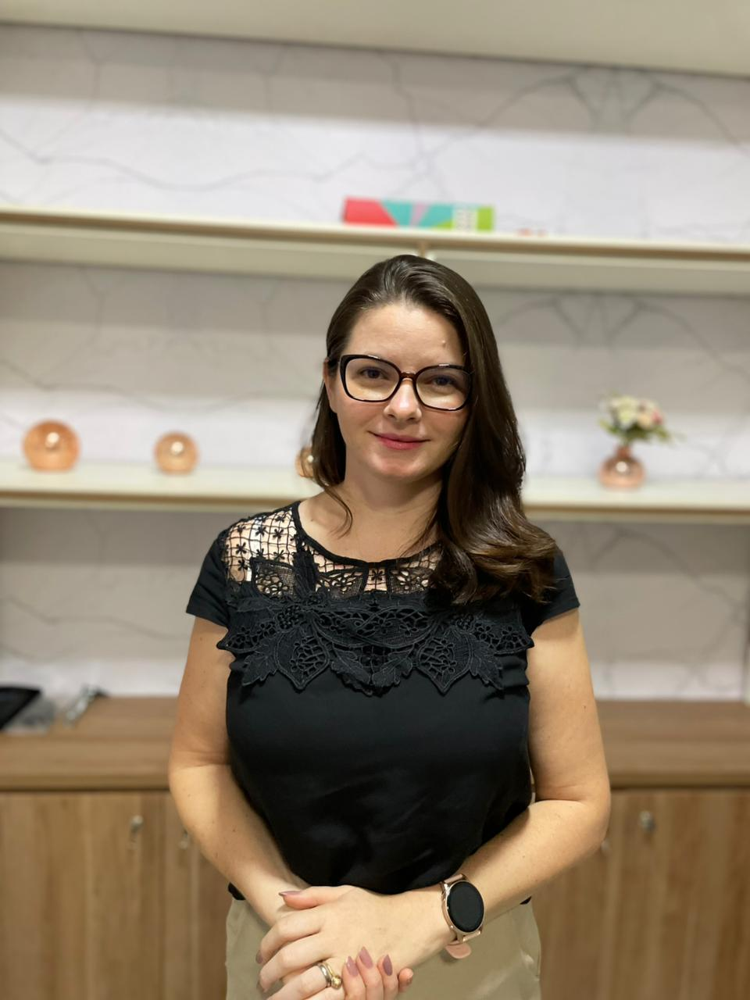

Neuropsicóloga · CRP 24/04453
Prazer, sou a Jéssica Machado
Há mais de oito anos dedico minha prática clínica a entender a mente humana e a cuidar de pessoas — com escuta, ciência e afeto. Une-se aqui a psicologia que acolhe e a neurociência que explica.
- CRP 24/04453
- Desde 2017
- Autora


Quem é a Jéssica
Psicologia com escuta, ciência e afeto
Sou Jéssica Machado, neuropsicóloga (CRP 24/04453), formada pelo Centro Universitário Adventista de São Paulo (UNASP), com especialização em Neuropsicologia. Acredito numa clínica que une o rigor da ciência ao cuidado humano — onde cada pessoa é compreendida na sua história.
Ao longo da carreira, atuei em consultório particular, em atendimento social a pessoas em situação de vulnerabilidade e no acompanhamento de pacientes e famílias na APAE. Também sou autora, e escrevo sobre temas que atravessam a vida emocional das pessoas.
- Graduação em Psicologia — UNASP
- Especialização em Neuropsicologia
- Formações em TEA/Autismo, ABA, TCC e violência contra a mulher
- Experiência em avaliação neuropsicológica, APAE e atendimento social
Trajetória
Uma década dedicada ao cuidado
Da formação à clínica, do social ao acadêmico — um caminho construído com propósito.
-
2014–2017
Início na saúde pública
Atuação em promoção da saúde, grupos terapêuticos, palestras e rodas de conversa pelo PSF (UNASP/Cejam).
-
2016–2017
Estágio em avaliação neuropsicológica
Formação prática em avaliação neuropsicológica e psicodiagnóstico na policlínica universitária do UNASP.
-
2017
Graduação & consultório
Formada em Psicologia, inicia o atendimento clínico em consultório particular e o trabalho social em São Paulo.
-
2022
APAE & necessidades especiais
Passa a acompanhar pacientes e famílias na APAE de Mirante da Serra, com atenção ao desenvolvimento e à inclusão.
-
Hoje
Neuropsicóloga & autora
Especialista em Neuropsicologia e autora de “O Despertar de Amélia”, atende em Rondônia e online para todo o Brasil.
Áreas de atendimento
Como posso te ajudar
Dois caminhos de cuidado. Escolha o que faz sentido para você e conheça em detalhe.
Neuropsicologia
Avaliação neuropsicológica para compreender atenção, memória, aprendizagem e comportamento — apoio a famílias e escolas. Atendimento presencial em Rondônia.
Conhecer a avaliaçãoPsicoterapia de Relacionamentos
Acompanhamento para mulheres que vivem ou viveram relacionamentos abusivos. Um espaço seguro para recomeçar. Online para todo o Brasil e presencial em RO.
Conhecer a psicoterapiaTambém sou autora
“O Despertar de Amélia: você sabe o que fez”
Uma história sobre relacionamentos abusivos que já acompanhou inúmeros processos terapêuticos, ajudando mulheres a reconhecer sinais e encontrar caminhos de saída.
Escrever faz parte de quem eu sou — e do cuidado que ofereço.
Sobre esse trabalhoContato
Vamos conversar?
O primeiro passo é uma conversa. Fale comigo pelo WhatsApp ou e-mail.
(69) 99984-4141